Ayuda y documentación de la grámatica del lenguaje
• Operadores
Los Operadores de comparación nos sirven para verificar la paridad de los datos a comparar y son:
Menor que, en los extremos los valores a comparar y en medio la palabra reservada "menor|:", tal como se muestra en el ejemplo:
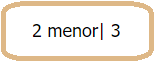
Mayor que, en los extremos los valores a comparar y en medio la palabra reservada "mayor|:", tal como se muestra en el ejemplo:
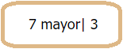
Mayor o igual que, en los extremos los valores a comparar y en medio la palabra reservada "mayor|=:", tal como se muestra en el ejemplo:
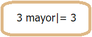
Menor o igual que, en los extremos los valores a comparar y en medio la palabra reservada "menor|=:", tal como se muestra en el ejemplo:
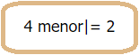
Incremento en 1, utilizado para aumentar el valor de una variable en 1, al igual que para aumentar la variable de iteración del "ciclof"
Decremento en 1, utilizado para decrementar el valor de una variable en 1, al igual que para disminuir la variable de iteración del "ciclof"
• Tipos de datos
Los tipos de datos para el lenguaje son numéricos, booleanos y cadenas de caracteres y toman los siguientes valores
Numéricos: {0,1,2,3,4,5,6,7,8,9}
Cadena de caracteres: combinación de numeros, letras y simbolos.
Booleanos: true o false.
• Crear variables
Para crear variables hacemos uso de la palabra reservada Tdato seguido del nombre de la variable (en el ejpmlo "Letras"), y finaliado por punto y coma, como se muestra en la imagen:
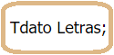
• Asignación a variables
Para asignar valores numéricos o cadena de carácteres a las variables ya creadas usamos el nombre de la variable ya creada seguido del simbolo de asignación"<-", y el valor que le queremos asignar, finalizando con punto y coma, como se ejemplifica en la imagen:
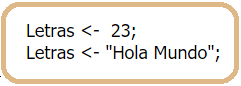
Y para variables no creadas, creamos la variable y le asignamos el valor deseado, tal como se muestra:
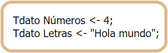
• Condicionales anidados y no anidados
Para crear condicionales NO ANIDADOS hacemos uso de la palabra reservado "si cumple" (en el caso de utiliar el comunmente llamado "if"), seguido de la condición numéricas o booleanas entre parentesis, ademas de el codigo a realizar entre llaves, y para el llamado "else" utilizamos la palabra reservada "no cumple", ademas de el codigo a realizar entre llaves, como se muestra en el ejemplo:
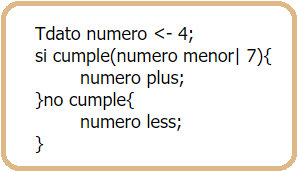
Y para condicionales ANIDADOS seguimos las reglas mencionadas para CONDICIONALES NO ADIDOS, ingresando los concionales a anidar dentro de las llaves del condional en el cual queremos añadir los condicionales, ya sean del "si cumple" o "no cumple":
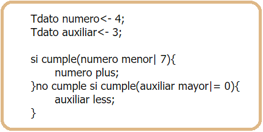
• Ciclos
Para anidar los ciclos entre sí, basta con respetar las reglas de sintaxis y gramática, y realizar la respectiva anidación.
En el ciclof, la estructura de este ciclo esta conformada por la palabra reservada "ciclof" seguido por el argumento entre paréntesis que está conformado por la variable de iteración y su valor de comienzo, el límite de la variable de iteración (operador comparativo), y la cantidad de aumento de la variable de iteración (less o plus), seguido de llaves donde se escribe el codigo a realizar durante el ciclo, como se muestra en la imagen:
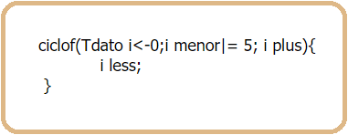
En el ciclo "hasta que" la estructura para hacer uso de éste es, la palabra reservada "hasta que" seguido de la condicion de parada entre paréntesis, y dentro de llaves el codigo a relizar durante el ciclo.
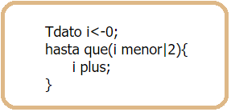
En el ciclo comunmente llamdo do while, nuestra estructura para hacer uso de éste es, la palabra reservada "hacer", seguido de entre llaves el código a realizar durante el ciclo, y finalizando con la palabra reservada "hasta que" y su condicion de parada entre paréntesis, sin olvidar finalizar con punto y coma, tal como lo muestra el ejemplo:
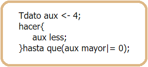
• Funciones
Las funciones tienen como estructura la siguiente: primero la palabra reservada "algoritmo" seguido del nombre que desea darle a la función (no debe comenzar por numero), seguido de los parámetros a pasar a la función dentro de paréntesis, y finaliazando con llaves donde se va a escribir el codigo a realizar por la función, como muestra el ejemplo:
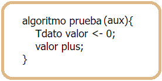